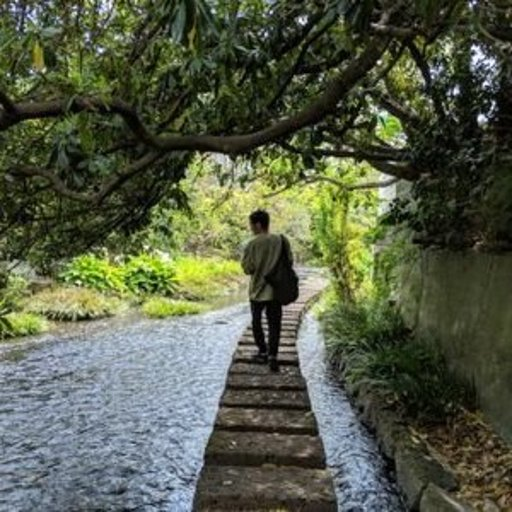
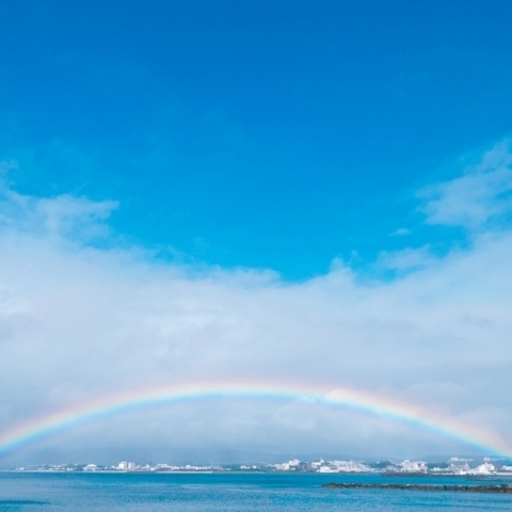

NEWS
makerzメンバー集合
makerz内でチーム分け（3チームに分かれて作業開始）
Baumkuchen & cookie合同
Git& GitHubのワークフローを理解しようー！の朝会を開催
準備中
準備中
準備中
Who is made of makerz?
SIerとスタートアップを2社経験して、Webエンジニアは今年で5年目の「ちひろ」。
”開発をしていく活動で、皆さんが活躍するエンジニアになれる場を作っていけるのではないかな”
と直感したことがはじまりです。
- FROM CHIHIRO -
色んな方と話したりTweetを見ていく中で、この場のような活動があっても良いじゃん！って思って
いる、楽しくゆるく、でもやるときは真面目に、皆さんにとってハッピーな場になっていってほしいなと、
シンプルに思っています。
一緒に、割ける時間の中で、最大限工夫して、楽しんで、良い仲間を作って、支え合って、活動
と自分をアップデートし続けていきましょう！





